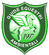

A.S.D. Rocky Mountain Ranch
L’associazione sportiva dilettantistica Rocky Mountain Ranch è lieta di offrire escursioni a cavallo negli splendidi paesaggi della bellissima valle Arroscia in Liguria, corsi di lavoro in piano di vari livelli e per i più piccini pony games e tanto divertimento!
